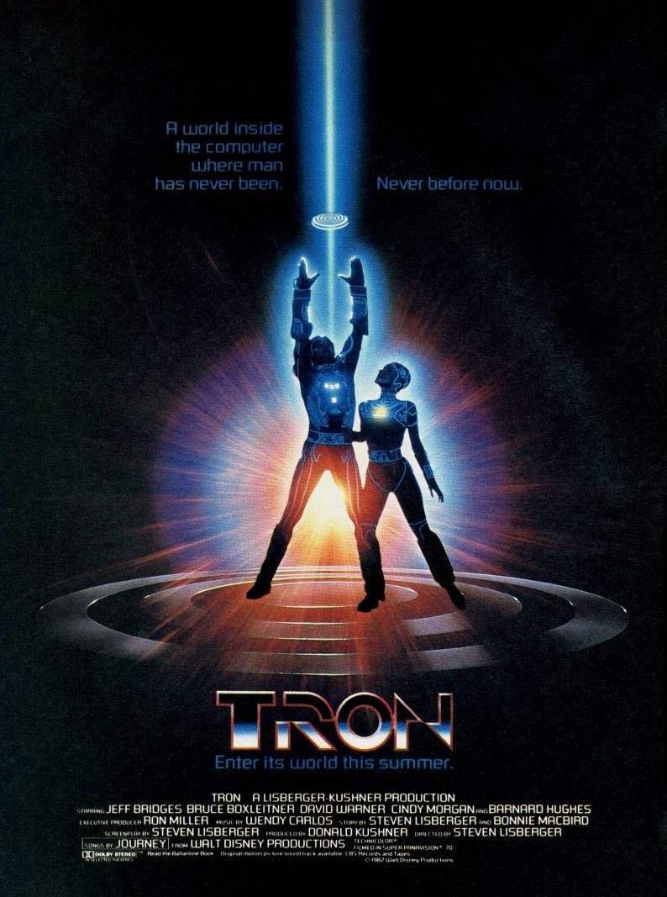

Tron: Uma Odisseia Eletrônica
Tron é um filme de ficção científica lançado no ano de 1982, dirigido por Steven Lisberger. O enredo do filme gira em torno de um programador de computador chamado Kevin Flynn, interpretado por Jeff Bridges, que é transportado para dentro de um mundo virtual conhecido como 'Grid', onde programas de computador assumem a forma de seres humanos e enfrentam desafios em uma realidade digital.
Tron (1982) Tron: Legacy (2010) 